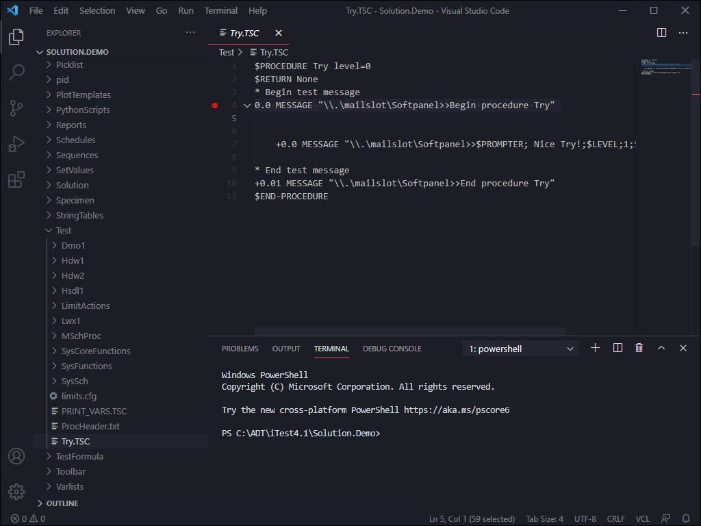
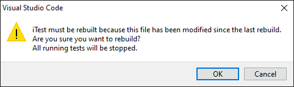
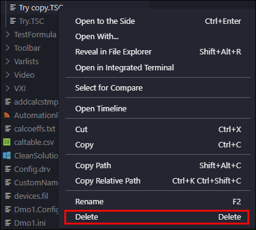
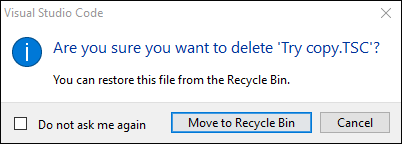

iTest User's Guide
Visual Studio Code Debugger: VCL
Product Version 4.5
Prepared By
ADT Software Engineering
A&D Confidential Document Distributable only to A&D Customers
Copyright A&D Company, Limited
A&D Technology Inc.
iTest.Pro includes an extension for Visual Studio Code (a.k.a. "VS Code") that allows for editing and debugging VCL procedures. This guide outlines the process for downloading and installing Visual Studio Code Debugger and using it to edit and debug iTest procedures.
For information about how to use Visual Studio Code to debug Python scripts, see Visual Studio Code Debugger: Python Scripts.
To install VS Code Debugger, do the following:
 |
CAUTION: | Failing to restart will prevent VS Code from connecting to iTest's RDB. This prevents proper debugging. |
iTest's VS Code plugin is tied to the iTest version it came from. Users with multiple iTest versions installed to the same machine must reinstall the plugin in order to change which iTest version VS Code's debugger attaches to.
To reinstall iTest's VS Code debugger, do the following:
To use VS Code Debugger, do the following:
Debug Controls
| Control | Icon | Description |
| Continue/Pause | Starts and pauses the debugging process. | |
| Step Over | Runs the current line then pauses. | |
| Step Into | Runs the current line then pauses. If the current line launches another procedure via an "EXECUTE" command, then Step Into opens the launched procedure then pauses. | |
| Step Out | Continues to the end of the current procedure then pauses. If debugging a secondary procedure via "Step Into" this "backs out" to show the calling procedure. | |
| Restart | Restarts the debugging process. | |
| Stop | Stops the debugging process. |
To add a breakpoint, click to the left of the line number you want to add a breakpoint to. A bright red dot will appear next to the line, indicating the breakpoint.
Add a Breakpoint

A breakpoint can be removed by clicking it or using the right-click options and selecting Remove Breakpoint.
The right-click options for breakpoints are described in the table below:
Breakpoint Right-Click Options
| Option | Description |
| Remove Breakpoint | Deletes the breakpoint. |
| Edit Breakpoint | The breakpoint becomes a conditional breakpoint and provides additional configuration options. Note: Conditional breakpoints are not supported by iTest's VCL debugger. |
| Disable Breakpoint | Breakpoint is disabled and changes from red to gray. Disabled breakpoints do not trigger when debugging. Clicking a disabled breakpoint will remove it. |
Select a .tsc file in VS Code's Explorer pane to edit it. By default, changes must be saved manually, but VS Code also supports saving automatically. To enable/disable this feature, select File > Autosave.
iTest must be rebuilt before debugging any changes to a procedure. VS Code will automatically display the prompt below if a rebuild is needed.
Rebuild Prompt

|
CAUTION: | PROCEDURE and $ENDPROCEDURE lines are automatically added and used internally. These lines should not be edited. |
An existing file can be copied and pasted into a new file. To copy and paste a procedure, do the following:
To delete a file, right-click the file you wish to delete and select Delete.
Delete File

A message will appear asking for confirmation. The file will be moved to the Recycle Bin.
Move to Recycle Bin

Right-click options within TSC Files are described in the table below:
Right-Click Options
| Option | Description |
| VCL: Build | Rebuilds iTest. Any tests that are running will be stopped. |
| VCL: Validate | Notifies you if there are any errors in the procedure. |
| Change All Occurrences | Finds and replaces the selected term with a new term. |
| Cut | Deletes the selected term or line. |
| Copy | Copies the selected term or line. |
| Paste | Pastes the selected term or line. |